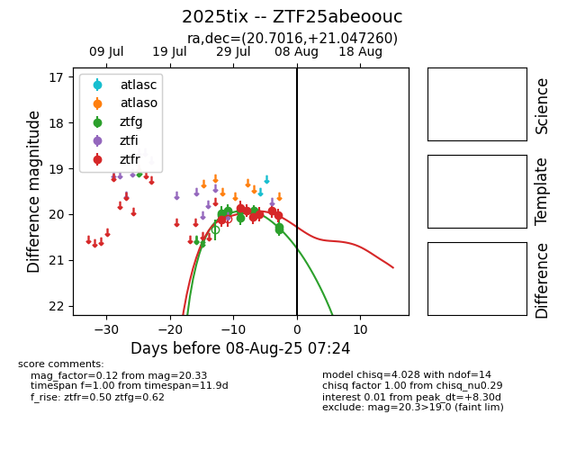

Target 2025tix at 2025-08-08 10:45, see:
FINK: fink-portal.org/2025tix
Lasair: lasair-ztf.lsst.ac.uk/objects/2025tix
ALeRCE: alerce.online/object/2025tix
TNS: wis-tns.org/object/2025tix
YSE: ziggy.ucolick.org/yse/transient_detail/2025tix
alt names
ZTF25abeoouc (ztf,fink)
2025tix (tns,yse)
coordinates:
equatorial (ra, dec) = (20.7016,+21.04726)
galactic (l, b) = (132.6803,-41.22997)
photometry
last ztfg=20.33, ztfr=20.03
9 ztfg, 7 ztfr detections
